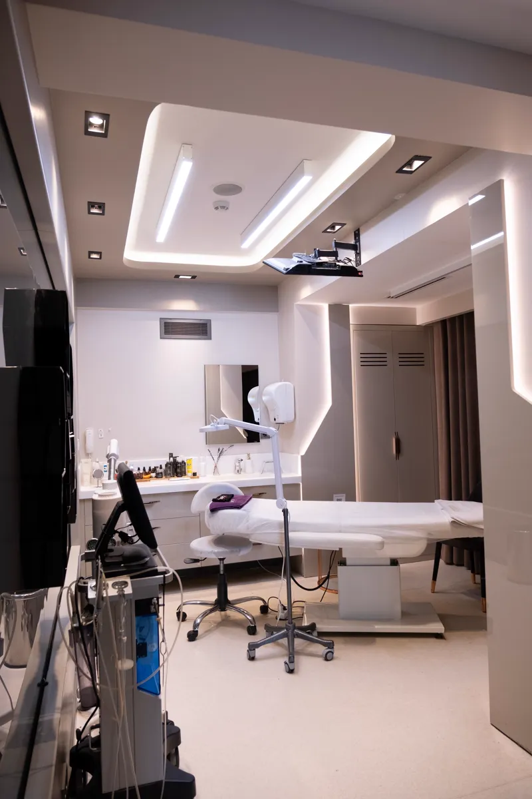

Faceliora
สำหรับคุณ
วิเคราะห์และจำลองภาพนิ่ง 2D มุมหน้า / 45° / 90° ไม่ใช่ 3D ที่หมุนดูได้
ดูวิธีสำรวจภาพiPhone: รอยืนยันความพร้อมและลิงก์

Faceliora ภาพจำลอง 2D สำหรับคุณ และ 3D สำหรับการปรึกษาในคลินิก
สำหรับคุณ
วิเคราะห์และจำลองภาพนิ่ง 2D มุมหน้า / 45° / 90° ไม่ใช่ 3D ที่หมุนดูได้
ดูวิธีสำรวจภาพiPhone: รอยืนยันความพร้อมและลิงก์
สำหรับคลินิก
ปรึกษาร่วมกันด้วยภาพ 3D ทั้งความงาม การฉีด และศัลยกรรม
ดูการปรึกษาด้วย ClinicScan ผ่าน iPhone รวมอยู่ใน Clinic
ภาพจำลองไม่ใช่การวินิจฉัย การทำนาย หรือการรับประกันผลการรักษา
มองทีละมุม เพื่อเตรียมคำถามก่อนตัดสินใจ ไม่ใช่แบบจำลองที่หมุนได้
เปิดเว็บแอปพิจารณาภาพมุมหน้า มุมเฉียง และด้านข้าง
ดูการเปลี่ยนแปลงบนภาพนิ่ง ไม่ใช่ผลลัพธ์ที่รับประกัน
ใช้ภาพช่วยตั้งคำถามกับแพทย์ ไม่ใช้แทนคำแนะนำทางการแพทย์
ลำดับนี้อธิบายแนวทางใช้งาน ไม่ใช่หน้าจอหรือปุ่มจริงของแอป ภาพผลิตภัณฑ์จริงยังไม่พร้อม

Faceliora Clinic ช่วยให้แพทย์และผู้รับคำปรึกษาใช้ภาพ 3D เป็นจุดอ้างอิงร่วมกัน
สำหรับความงาม การฉีด และศัลยกรรม โดยการประเมินและการตัดสินใจรักษายังคงเป็นหน้าที่ของแพทย์
เดโม / ทดลองใช้: รอยืนยันช่องทาง ความพร้อม และเงื่อนไข ปุ่มตัวอย่างยังไม่ส่งข้อมูล
ตัวรับข้อมูล 3D ผ่าน iPhone ที่รวมใน Clinic ไม่ใช่แพ็กเกจขายแยกในหน้านี้
ยังไม่มีภาพการใช้ Clinic จริง จึงแสดงเพียงบริบท ไม่จำลองหน้าจอแอปหรือผลการรักษา
| แพ็กเกจ | ราคาพื้นฐาน |
|---|---|
| Free | ฿0 |
| Plus | ฿499/ เดือน |
| Pro | ฿799/ เดือน |
สิทธิ์แต่ละแพ็กเกจ รอบบิล ภาษี และราคาตามแพลตฟอร์มยังรอยืนยัน ไม่มีการสมัครหรือชำระเงินในหน้านี้
ราคา Clinic และระยะเวลาทดลองใช้ยังรอยืนยัน
ไม่ได้ ภาพเป็นสื่อช่วยสำรวจและสื่อสาร ไม่ใช่การวินิจฉัย การทำนาย หรือการรับประกันผล ควรปรึกษาแพทย์ก่อนตัดสินใจรักษา
Faceliora บุคคลใช้ภาพนิ่ง 2D มุมหน้า / 45° / 90° ส่วน Clinic ใช้ภาพ 3D เพื่อปรึกษาร่วมกัน และมี Scan ผ่าน iPhone รวมอยู่ด้วย
ความพร้อมและลิงก์ iPhone ยังรอยืนยัน หน้านี้จึงไม่มีปุ่มติดตั้ง เว็บแอปใช้ปลายทางที่ระบุไว้เท่านั้น
ช่องทาง เงื่อนไข ระยะเวลา ความพร้อม และราคา Clinic ยังรอยืนยัน ปุ่มตัวอย่างไม่ส่งคำขอ ไม่เก็บข้อมูล และไม่มีสถานะสำเร็จ
เลือกสำรวจด้วยตัวเอง หรืออ่านแนวทางสำหรับการคุยร่วมกับคลินิก